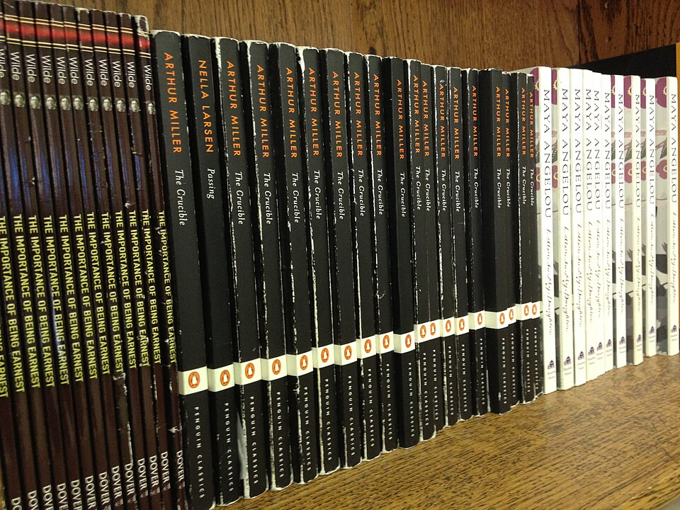

학급용으로 비치된 영어 원서 (이미지) · 사진: Dfmichel / Wikimedia Commons, CC BY-SA 4.0
국제학교 리딩 레벨 읽는 법 — 렉사일(Lexile)·AR·F&P 숫자가 학교마다 다른 이유
1. 먼저 — 리딩 레벨은 "하나"가 아닙니다
가장 큰 오해가 여기서 시작됩니다. 학부모님은 리딩 레벨을 키나 몸무게처럼 하나의 값이라고 생각하시는데, 실제로 학교들이 쓰는 잣대는 여러 개이고 재는 방법도 서로 다릅니다. 학교마다, 심지어 같은 학교 안에서도 도서관과 영어 수업이 다른 잣대를 쓰기도 합니다.
국제학교에서 한국 학부모님이 가장 자주 만나시는 세 가지를 표로 정리하면 이렇습니다.
| 잣대 | 적히는 모양 | 무엇으로 재나 | 어디서 자주 보이나 |
|---|---|---|---|
| 렉사일 (Lexile) | 850L — 숫자 뒤에 L 아주 낮으면 BR(초기 독자) 표기 | 문장의 길이와 낱말이 얼마나 흔한가를 계산 | 영어 시험 결과지, 온라인 읽기 프로그램 |
| AR (ATOS) Accelerated Reader | 4.2 — 학년을 닮은 소수점 | 자체 공식으로 책의 난이도를 매기고, 독후 퀴즈로 이해를 확인 | 학교 도서관, 책 뒤표지 라벨 |
| F&P Fountas & Pinnell | A ~ Z — 글자 등급 A가 가장 쉽고 뒤로 갈수록 어려움 | 교사가 옆에서 읽히며 정확도·유창성·이해를 함께 기록 | 초등(PYP·Elementary) 담임 면담, 읽기 지도 |
표에서 꼭 보셔야 할 칸은 "무엇으로 재나"입니다. 렉사일은 컴퓨터가 글을 분석하고, AR은 공식 + 퀴즈로 확인하며, F&P는 사람이 옆에서 듣고 기록합니다. 재는 방법이 이렇게 다른데 숫자만 나란히 놓고 비교하는 것은 키를 센티미터로 재고 몸무게를 킬로그램으로 잰 뒤 두 숫자를 빼는 일과 비슷합니다.
학교가 쓰는 레벨 테스트 자체(MAP·WIDA·CAT4 등)가 궁금하시면 영어 레벨테스트 총정리를 보시면 됩니다. 이 글은 그 결과로 나오는 읽기 수준 숫자를 어떻게 읽느냐에 대한 글입니다.
2. 그래서 전학하면 숫자가 달라집니다
주재원 가정에서 가장 흔하게 벌어지는 장면입니다. 전 학교에서는 "레벨 S"라고 들었는데, 새 학교에서는 "렉사일 780L"이라고 합니다. 올라간 건지 내려간 건지 알 수가 없습니다.
이때 기억하실 것은 하나입니다. 두 숫자는 애초에 서로 바꿔 쓸 수 있는 값이 아닙니다. 인터넷에 도는 환산표가 있지만, 그 표들도 대부분 "대략 이 정도"라는 단서를 달고 있습니다. 잣대가 보는 것이 다르기 때문입니다.
실용적인 대처는 이렇습니다.
· ① 같은 잣대 안에서만 비교하세요. 우리 아이의 렉사일이 지난 학기 대비 어떻게 움직였는지는 의미가 있습니다. 렉사일과 F&P를 비교하는 것은 의미가 없습니다.
· ② 전학 첫 해의 숫자는 "새 기준선"으로 두세요. 새 학교의 잣대로 다시 잰 출발점입니다. 떨어졌다고 보실 필요가 없습니다.
· ③ 담임께 잣대 이름을 물어 적어 두세요. "우리 학교는 읽기 수준을 무엇으로 표시하나요"라고 한 줄만 물으시면 됩니다. 이 한 줄이 다음 상담을 훨씬 편하게 만듭니다. → 학부모 상담 준비법
3. 학부모님이 자주 하시는 오해 다섯 가지
① "리딩 레벨 = 영어 실력 전체"
아닙니다. 리딩 레벨은 읽기에 관한 값입니다. 쓰기·말하기·듣기는 따로 봅니다. 그래서 리딩 레벨이 나쁘지 않은데 에세이 점수가 안 나오는 일이 흔합니다. 에세이는 읽기가 아니라 구조와 근거의 문제입니다. → 영어 공부법(에세이·문학)
② "숫자가 높은 책을 읽히면 빨리 는다"
렉사일은 문장 길이와 낱말 빈도를 바탕으로 계산한 값이어서, 내용이 아이에게 맞는지까지 말해 주지 않습니다. 숫자가 높아도 아이가 흥미를 못 붙이는 책이 있고, 숫자가 낮아도 생각을 많이 요구하는 좋은 책이 많습니다. 학교들이 권하는 방식은 지금 수준보다 조금 위의 책을 꾸준히 읽는 것입니다.
③ "레벨만 올리면 교과 성적도 같이 오른다"
절반만 맞습니다. 교과 성적은 읽는 속도만이 아니라 아카데믹 어휘(analyze·evaluate·justify 같은 지시어)와 답안의 형식에서 갈립니다. 읽기는 바닥을 받쳐 줄 뿐입니다. → 형성평가·총괄평가
④ "회화가 되니 읽기도 될 것이다"
가장 비싼 오해입니다. 생활 영어와 교과를 읽고 설명하는 영어는 다른 능력입니다. 영어를 널리 쓰는 나라(싱가포르·필리핀 등)에 계신 가정에서 특히 늦게 발견됩니다. → EAL(영어 지원 프로그램) · Learning Support
⑤ "레벨이 안 오르면 더 많이 읽히면 된다"
양을 늘려도 멈추는 지점이 그대로면 잘 오르지 않습니다. 낱말에서 멈추는 아이, 긴 문장에서 앞뒤 연결을 놓치는 아이, 다 읽고도 요약을 못 하는 아이는 각각 다른 처방이 필요합니다.
4. 집에서 할 수 있는 네 단계
1단계 — 잣대 이름과 현재 값을 한 줄로 적는다.
"2026년 9월 · 렉사일 780L" 처럼 날짜와 함께 적어 두세요. 값 하나로는 아무것도 알 수 없고, 같은 잣대의 두 번째 값이 생겨야 방향이 보입니다.
2단계 — 한 문단을 소리 내어 읽히고 요약시킨다.
아이가 학교에서 실제로 읽는 교과 지문을 한 문단만 고르세요. 소리 내어 읽게 한 뒤 "방금 읽은 걸 네 말로 말해 줄래" 하고 물으시면 됩니다. 여기서 낱말에서 막히는지 / 문장 연결에서 막히는지 / 다 읽었는데 요약이 안 되는지 셋 중 어디인지가 드러납니다. 5분이면 충분합니다.
3단계 — 책은 "조금 위"에서 고르고, 끝까지 읽힌다.
한 쪽에 모르는 낱말이 너무 많아 사전을 계속 찾아야 하면 읽기가 멈춥니다. 반대로 술술 넘어가면 늘지 않습니다. 끝까지 읽은 책의 수가 숫자보다 정직한 지표입니다.
4단계 — 상담 때 숫자 대신 질문을 들고 간다.
"레벨이 몇이에요"보다 "우리 아이가 읽을 때 주로 어디서 멈추나요"가 훨씬 많은 것을 알려 줍니다. 선생님은 아이가 읽는 모습을 직접 보신 분입니다. → 학부모 상담 준비법 · 성적표 읽는 법
5. 과외는 어디서 도와 드리나
리딩 레벨이 낮게 나왔을 때 가장 흔한 실수는 곧바로 문제집을 늘리는 것입니다. 원인을 나누지 않으면 시간만 씁니다. 수업에서는 이런 순서로 봅니다.
· ① 멈추는 지점 찾기 — 아이가 학교에서 쓰는 실제 지문으로 확인합니다. 낱말인지, 문장 구조인지, 요약인지.
· ② 아카데믹 어휘 붙이기 — 교과서와 문제에서 반복되는 지시어부터 정리합니다. 이 어휘는 읽기뿐 아니라 시험 답안에 바로 쓰입니다.
· ③ 문단 구조로 넘어가기 — 읽은 내용을 주장·근거·해석 순서로 다시 써 보게 합니다. 여기서부터 에세이 점수가 움직입니다. → 입학 준비 총정리
· ④ 수학 지문도 함께 — 의외로 수학의 워드 프라블럼이 읽기에서 막히는 경우가 많습니다. 영어 용어를 붙이는 작업이 같이 갑니다. → 알지브라 공부법
주재원 가정이라면 시차가 대부분 유리합니다. 아이가 학교에서 돌아온 직후 시간이 한국 강사진의 수업 시간과 맞는 도시가 많습니다. 싱가포르 · 홍콩 · 상하이 · 도쿄 · 방콕 등 도시별 사정은 각 지역 글에 정리해 두었습니다.
정리
리딩 레벨은 하나의 값이 아니라 여러 잣대입니다. 렉사일은 숫자 + L, AR은 학년을 닮은 소수점, F&P는 A~Z 글자이고, 재는 방법도 다릅니다. 그러니 서로 다른 잣대의 숫자를 비교하지 마시고, 같은 잣대 안에서 시간에 따라 어떻게 움직이는지만 보세요. 그리고 숫자보다 중요한 질문은 언제나 이것입니다. "우리 아이는 읽을 때 어디서 멈추는가." 30분 무료 상담으로 아이가 멈추는 지점부터 함께 찾아 드립니다.